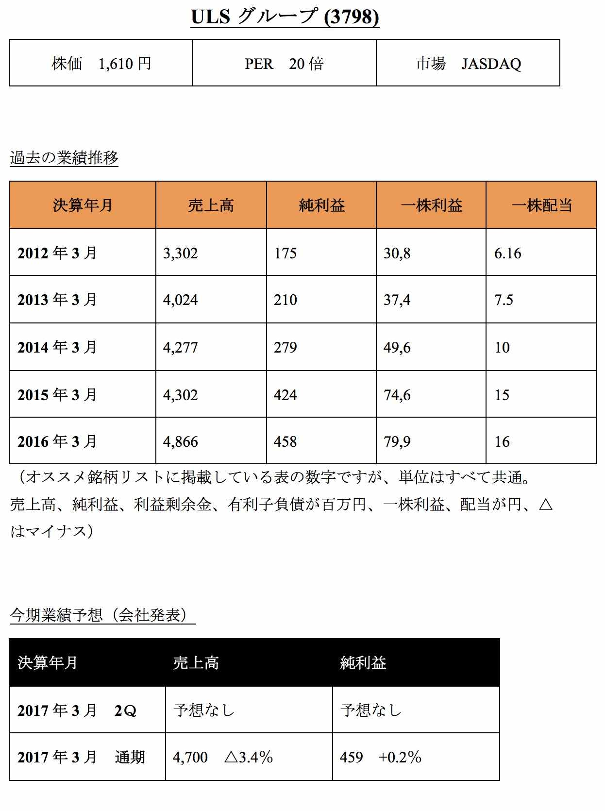
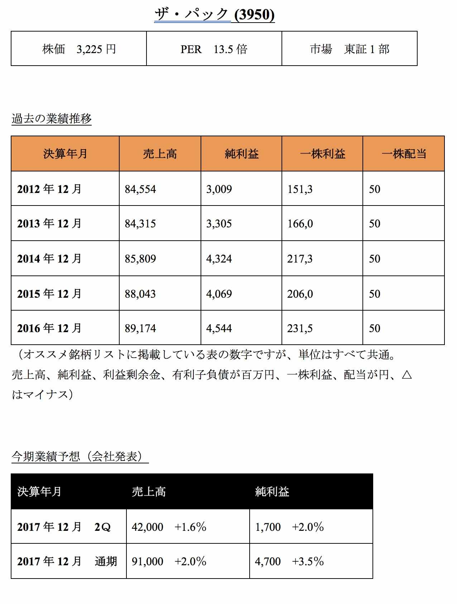
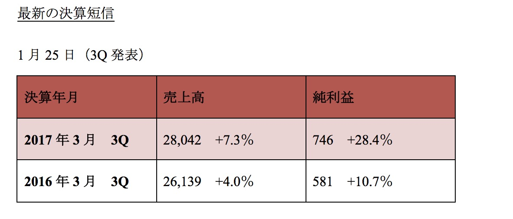

| １分で掴む必勝株 億越え投資家が教える注目の15銘柄（2017年春号） | |
| 坂本彰 | |
| (2017) | |
はじめに
このたびは、「１分で掴む必勝株 億越え投資家が教える注目の１５銘柄」（２０１７年春号）を購入いただきまして、誠にありがとうございます。
著者の坂本 彰と申します。
私は、サラリーマン時代に始めた株式投資から多くの失敗と経験をし、株で勝つための独自ルールを作り上げていきました。
２００９年１０月、１３０万円だった株式資産は２０１７年に７０００万円を突破。定期預金などを合わせた資産は１億２０００万円を超えました。
実は、株式投資で１０００万円や、それ以上の資産を作るのは、そこまで難しいことではありません。
例えば、私の購入した銘柄で最も利益の出ている会社に、アークランドサービス(３０８５)があります。
同社はカツ丼専門店「かつや」を直営、フランチャイズで全国展開しており、私が購入した時の単価は、なんと１株６５４円でしたが、約５年半で株価は１０倍になり、１４００万円を超える利益を生み出しました。
株で資産を築いていく過程で、投資系の雑誌から多数取材依頼をいただき、２０１６年にはお陰様で書籍「小売お宝株だけで１億円儲ける法」（日本実業出版社）を出版するまでになりました。
多くの個人投資家に読んでいただき、定期的にお礼のメールをいただいております。本当にありがとうございます。
この本では、会社四季報と決算短信という企業の成績表を見ていくことで、株価が２倍、３倍どころか、４倍、５倍。中には１０倍を超える株式を発掘するためのノウハウを惜しみなく書きました。
このように、株式投資には、自分の人生を激変させてくれるものすごい力を秘めているのですが、有望株を見つけ、それを保有し続ける人は、ほんの一部しかいません。
例えば書籍では、会社四季報（以下、四季報）を使って、株価が大きく上昇を続ける条件や法則をいくつか紹介しています。
これは、私が１５年という時間と労力をかけて生み出した黄金法則でもあるのですが、「有望株を見つけるのに時間がかかりすぎる」というデメリットがあります。
現在、上場企業は約３６００社ありますが、それをすべて個人投資家が調べるのは不可能に近いです。
そのため、不定期ではありますが、これはオススメしたいという株を注目銘柄として電子書籍で紹介していくことに決めました。
出版社が作り、全国の書店に並ぶ紙の書籍と比べ、電子書籍の場合、出版までのスピードが圧倒的に早いというメリットがあります。
この本では、注目銘柄に加え、株式投資ノウハウや最新情報などを綴ったコラムも掲載いたしました。
併せて読んでいただき、投資ライフを楽しんでいただければ幸いです。よろしくお願いいたします。
株式会社リーブル 代表取締役 坂本 彰
コラム① トランプ大統領の誕生と、２０１７年以降の投資戦略
米国大統領選挙はトランプ氏が勝利しました。
２０１６年１１月９日の株式市場は開票しているリアルタイムでの時間帯だったため、開票状況とともに乱高下。日経平均株価は終値でマイナス９００円を超えました。
その後、トランプ氏の勝利が決まった後、米国の株価がどこまで下がるのかに注目が集まりましたが、大半の予想に反して米国株市場は上昇となりました。
翌日、１０日の日経平均株価は９００円以上上昇し、９日の下げは一体何だったの？という状況です。
「クリントン氏が優勢という報道にも関わらず、開票が始まるとトランプ氏がリード。」
「大統領が決まった後はリスク回避の動きから、米国株は大幅下落必至と思われたが、上昇した。」
多くのメディアや専門家が予想していた真逆の結果となり、個人投資家の皆様はビックリされたと思います。
なぜ、こんなことが起こるのか？
それは、ブラックスワン理論で説明できます。
従来の知識や経験からは予測できない極端な現象や出来事が発生し、多大な影響を与えることを「ブラックスワン理論」と呼びます。
理論の由来は元ヘッジファンド運用者としての経験を持つナシーム・ニコラス・タレブ氏が、２００６年に刊行した著書「ブラックスワン」で説明したのが始まりです。
今まで全ての白鳥が白色と信じられていましたが、オーストラリアで黒い白鳥が発見されたことで、鳥類学者の常識が大きく崩れる出来事が起こりました。
タレブ氏は、この出来事を元に確率や従来からの知識、経験では予測できない極端な現象が発生し、その現象が多大な影響を与えることを「ブラックスワン理論」と呼びました。
今回の米大統領選の結果や、２０１６年６月に発生した英国のEU離脱に伴う株価の乱高下もブラックスワン理論で説明可能です。
次のブラックスワンはいつ、どこで起こるかは誰にもわかりませんが、下がるタイミングを予想するのではなく、下がってしまった場合、どの株を購入、または買い増しするのか？
対策を常に立てておきましょう。
続いてトランプ大統領誕生で考えられる、今後のシナリオについて。
過激発言が特徴だったトランプ氏ですが、その中でも気になる発言が日本に対する輸入関税を上げるという内容です。
日本が牛肉に３８％
の関税をかけるなら、我々も日本の自動車に３８％
の関税をかける。（ネブラスカ州の演説にて）
トランプ氏は日本から輸入する車にかける関税が２，５％
であることについて触れ「日本から何百万台も自動車が流れ込んでいるが、ほとんど関税がかかっていない」と主張しています。
今後、具体的にどう行動していくのか注視する必要があります。
９日の株価が９００円以上も急落した要因の一つに、日経平均株価を構成する主要銘柄が、国際優良株中心ということが挙げられます。
国際優良株とは、世界中に商品やサービスを販売している日本を代表するような知名度の高い会社のことですが、輸出シェアの一番大きい貿易相手国は米国になります。
「アメリカがくしゃみをすれば日本は風邪をひく」という格言があるように、米国のＧＤＰは日本の約４倍もあるため、あなたが思っている以上にインパクトは大きいです。
２０１７年４月６日には、シリア北部イドリブ県で行われた化学兵器を使用したとみられる空爆に対し、アメリカのトランプ政権は、政府軍のシャイラート空軍基地に５０発の巡航ミサイルによる攻撃を敢行しました。
この攻撃は、今年１月に誕生したトランプ政権が初めて発動した軍事作戦であり、シリア紛争が始まった２０１１年春以降初めての直接的な軍事介入となりました。
今後は、トランプ大統領の関税に関する発言や政治リスクに注目してください。
最後。資産運用に関して私からの提案です。
今後、国際優良株や輸出で利益を稼ぐ企業の大半は、新大統領の発言で株価や為替相場、業績が大きく動くはずです。
そのため、国際優良株への投資をやめて、様子見する。もしくは投資ウェイトを下げていきましょう。日本株の投資信託を保有している人も同じです。
投資信託に組み入れている株式はインターネットで閲覧できたり、資料を取り寄せることができます。
多くの投資信託は、国際優良株への投資比率が大きいため、一部を解約するなど検討してみましょう。
注目銘柄の読み方について
①
企業名と株価
企業名と４ケタの証券コード。株価は掲載時点の株価となっております。
ＰＥＲとは、株価を一株利益で割ったものです。倍率が低ければ低いほど割安だと判断できますが、市況や業種により、割安度の判断は異なります。
②
過去の業績推移
理想的な流れとしては、毎年利益が着実に増えていることですが、まずは赤字のない企業を選ぶようにしましょう。
③
今期業績予想
こちらは今期の業績予想です。増益（利益が増加していること）が理想的。
④
最新の決算短信
決算短信は３か月に一度あります。最新の決算短信を掲載しておりますが、株式を購入した企業は定期的にチェックしましょう。
⑤
コメント
決算内容や今後の業績予想など、企業に関する独自視点のコメントを掲載いたしました。なるべく専門用語を避け、わかりやすく書くように心がけました。
コメント
地主に賃貸住宅経営提案し施工から管理、仲介まで一貫化している東建コーポレーションを選びました。賃貸住宅業界では、２０１６年１１月、レオパレス２１（８８４８）が１００人以上の家主から契約不履行による未払い賃料の返還を求める集団訴訟を起こされたことがありましたが、景気の拡大や政府による各種住宅取得支援策に加えて、マイナス金利政策により住宅ローン金利のさらなる低下、相続税対策等により、新設住宅着工戸数は、持ち直しの傾向が続きました。
その結果、売上高は前年比５，５％
増の１４２５億５０００万円に、純利益は２３，３％
増の４７億８５００万円となりました。２Ｑ純利益予想よりも進捗率は２０％
近く上回っており、通期にかけても好業績が期待できそうです。
また、ＰＥＲも１１倍台と割安圏。有利子負債もゼロと条件が揃っているため、同社を推薦しました。
コメント
１５８６年創業、社寺建築で優れた技術を有する松井建設ですが、前期に引き続き今期も好調です。
決算資料ではセグメントごとの詳細に関する記載はないものの、宿泊施設などが好調であることや、学校や病院など採算性の高い大型工事が複数完工し利益に貢献いたしました。
また、採算を重視していることや粗利率も改善した結果、売上高は前年比７，０％
増の６６６億８６００万円に、純利益は２４，５％
増の３４億３３００万円となりました。
今期純利益予想は４，２％
増の４０億円を据え置いたままですが、３Ｑ時点で進捗率は８５，８％
に達しており、業績の上乗せや上方修正などの好材料の発表が期待できそうです。
ＰＥＲも７，９倍台と、まだまだ割安。
コメント
電気工事会社。北陸電力の子会社で北陸電気向けが売上ウェイト多い北陸電気工事。
同社は着実という表現が当てはまる会社ではないでしょうか？過去の業績を見てみると、５期連続で増収増益、増配を続けています。
今期は大型案件の進捗が伸び悩びましたが、利益面については、工程・原価管理を徹底したほか、全般にわたる継続的なコスト削減に努めた結果、売上高は前年比４，６％
減の２９３億８９００万円ながら、純利益は１，２％
増の２１億６１００万円となりました。
通期純利益予想は据え置きですが、今後は北陸の大型案件以外にも首都圏、関西圏での拡大戦略に期待。ＰＥＲは６倍台と激安です。
コメント
岐阜県地盤の広告代理店。地域密着型フリーペーパーの生活情報誌等発行。進出地域を拡大中の中広ですが、愛知県の広告主が増え、業績が拡大していきそうです。
今期も発行エリアを拡大し続けてきたことや、組織変更を実施し、大口広告主によるエリアマーケティング戦略への要望に応える体制を整え、フリーマガジンの発行エリア拡大に伴う受注拡大に注力いたしました。
その結果、売上高は３Ｑ時点で５３億８９００万円に、純利益は１億９４００万円となっております。現時点で割安度は低いものの、来期以降の業績拡大に反して、一時的な株価の急落が起こった場合、買いの対象となりそうです。
コラム② 好業績発表、上方修正で利益を掴む２つのポイント
上方修正とは、会社が予想していた以上に売上や利益が伸びた場合、上場企業の適時開示規約に則り、発表することが求められている決まりの一つです。
上方修正は、業績が従来予想よりも増えるという、株主や株価にとってプラスの発表となります。修正を行わなくてはいけない基準値は決められており、
１ 売上高で１０％
以上の増加
２ 営業利益・経常利益・当期純利益で３０％
以上の増加
があった場合です。
上方修正を発表することは、会社が予想以上に利益を出していることがマーケット全体に伝わることや、サプライズ効果もあり、株価が急上昇する大きな要因となります。
上方修正にまで至らなくとも、業績が予想よりも高い進捗率だっただけでも、上昇傾向が続くことも多いです。
そのため、上方修正というキーワードは、個人投資家であっても敏感に反応していきましょう。
上方修正を発表する好業績企業を見分ける方法としては、先ほど挙げた２つの条件を満たす企業を決算短信から探すことです。
前ページの画像はある企業の第一四半期（１Ｑ）決算短信資料です。
赤い枠で囲った上の部分は今期の実績、下の赤枠は今期の会社予想となっております。まず下の赤枠をご覧ください。
第２四半期の売上高は前年比８，４％
増、営業利益は１０，１％
増の予想となっております。
それに対して実績は売上高が１６，４％
増となっており、１～２Ｑにかけて上方修正の基準にまで上昇する可能性は少ないかなと思われます。
その次の営業利益は前年比５３５，４％
増となっており、会社予想と比べて、非常に大きなかい離が見られます。
この場合、２Ｑ発表前に上方修正する可能性が高いなと判断できます。
決算短信は各企業のIR情報に掲載されていますので、誰でも閲覧可能です。
丁寧に調べていくことでサプライズ企業は事前にある程度判断できますが、証券取引所に上場されている企業は約３６００社もあるため一つずつ調べることは不可能です。
そのため、成長株や業績回復株など、投資対象を先に絞ってから、見分けてみましょう。
成長株とは、文字通り企業の将来性、株価の上昇余地が高い株のことで、成長率と、その伸びを事前に予測し、株価に反映させる前に投資するという投資法です。
売上、利益が伸びている会社を探し出し、そこに投資をする方法のこととも言えます。

コメント
組み込みソフト開発の技術者派遣、請負中堅でキャノン向けがシェア高いソーバルですが、３Ｑ純利益は減益も通期純利益予想は増益であること。
また、過去の業績推移を見てもわかるように、年度が進むごとに順調に拡大している業績に注目いたしました。
１２月２８日に発表されました３Ｑ決算短信によりますと、需要拡大が見込まれる自動車やロボット関連への技術参画を実現した一方で、新卒・若手エンジニアの教育コストに加えて、今後の収益拡大を図るうえで必要となる受託開発へのシフトを推進しており、そのコスト等が増加し利益率が低下しておりますが、注目したい銘柄の一つです。
コメント
独立系ＳＩ。組み込みソフト開発、システム開発、ネット運用が３本柱のエヌアイディですが、過去のきれいな業績の上昇ラインに加えて、会社予想よりも高い今期の進捗率に注目いたしました。
１月２７日に発表されました３Ｑ決算短信によりますと、今期はモバイル、社会インフラ、企業システムや金融向けの売上が増加したほか、前期発生した不採算案件の収束により、売上高は前年比０，５％
増の１２３億６４００万円に、純利益は２６，１％
増の８億６７００万円となりました。
通期純利益予想は１１億５０００万円を据え置いたままですが、予想数字よりも上振れする可能性もあるため、注目銘柄に掲載いたしました。
コメント
ＪＡＬ系商社。航空機や空港に関連する事業や不動産も扱う同社ですが、今期は訪日客向け爆買いは低迷も、順調な実績に注目いたしました。
１月３１日に発表されました３Ｑ決算短信によりますと、今期は主に航空機エンジン部品や水産物の販売が増加したことなどにより増収となりました。
また、事業用不動産販売や売買仲介の発生や、前期に計上された特別損失の減少もあり、売上高は前年比２，９％
増の１０８１億１３００万円ながら純利益は１１，７％
増の１９億２１００万円となりました。
過去５期、増収増益を継続している同社ですが、今期も収益の拡大基調は続くと予想しています。

コメント
ＩＴシステムのコンサル、設計、構築を主力事業とするULSグループ。前期まで高成長を続けていましたが、今期は減益予想となり、成長鈍化の兆しを感じておりましたが、２月に上方修正を発表し、増益予想に転じたため注目いたしました。
２月１０日に発表されました３Ｑ決算短信によりますと、今期は主に金融、製造、空運、サービス業等を中心とする既存顧客の受注が堅調に推移したことや、堅調な受注による高稼働とプロジェクトの品質管理の徹底を継続したことにより利益率が改善し、売上高は前年と同じ、２７億１３００万円となりました。
利益面においては、特別利益１１００万円を計上したこともあり、同日、通期純利益予想を従来の４億円から４億５９００万円へとする上方修正を発表いたしました。
コラム③ 正しい投資アドバイザーの選び方
個人投資家の８割とか９割は負け組で、勝っている人は全体の１割とか２割だという話をよく聞きます。
なぜ、こんなにも多いのかビックリしますが、現実問題として負けている。損失を抱えて悩んでいるという相談もよくあります。
株式投資に限っていえば、短期投資ではゼロサムゲーム、長期ではプラスサムになるのですが、大半の方は大きく損を出しているのです。
今回は、なぜそうなってしまうのか？最大の原因をお伝えいたします。
それは......「正しい投資アドバイザー」を選べていないからです。
まず、投資の初心者が頼る一番身近なアドバイザーに、証券会社や銀行の営業マンがあります。
ですが、この選択は最悪で、あなたの資産が増えるどころか、大きく減らされる可能性が高いです。
その証拠として、２０１４年７月に発表された「金融モニタリングレポートの概要」で注目すべきデータが掲載されています。
金融機関が積極的に提案する投資信託の乗り換えをすることで、実際どんな運用成績になるのか？
本文１８ページでは、２００３年３月末から１０年間、２年毎に、その時々に最も人気のあった投資信託に乗り換える売買を行った場合の収益状況の試算の結果が掲載されています。
その結果は年平均マイナス０，３％
、１０年間の運用でマイナス２，８％
という収益率でした。

投資信託のお粗末な成績と比べて、日経平均株価は１，５倍となっており、自分で株式投資を始めたほうが、資産は大きくなる可能性を感じるのではないでしょうか？
個人投資家は「投資信託はプロが運用するため安心。投資対象を自分で選ぶ必要がないため便利」という理由で、命の次に大事なお金を投資しているのですが、現実は手数料ばかりむしり取られて、資産は減らしている状況なのです。
他にも山ほどお伝えしたい事実があるのですが、それを話し出したら数十ページにもなりますので止めておきますが......。
くれぐれも金融機関、特に営業マンの話を聞いてはいけません。
では、正しい投資アドバイザーをどうやって選べばいいか？
まず一番目に、金融商品登録事業者であることを確認することは当たり前ですが、話をしている人が実際に投資をして儲かっているか？成功しているかどうかを確認してください。
投資の世界では、知識は山のようにありながら、なぜか自分のお金で投資をしていない人が大半です。
こんな人のアドバイスは、例えるなら、自動車免許を持っていないのに、車の運転について意見を言うようなものです。
ゲームならどんなに早く走れても、事故をする恐怖や体験が一切ないのと同じです。
自分でリスクを背負っていない人のアドバイスは、なるべく避けるようにしましょう。
実際成功している人が見つかった場合、その人の投資スタイルや考え方が自分と似ているかをチェックしてみましょう。
その他、投資経験（最低５年、できれば１０年）などにも注目してください。

コメント
百貨店や専門店向け等の紙袋大手で段ボールなど、紙製品を幅広く手掛けているザパックですが、地味な業種ながらも安定的な利益と着実な成長に注目いたしました。
２月１０日に発表されました決算短信では、２０１７年度はグループ全体で積極的に設備投資を行い生産能力の強化と効率化を図ること。
国内外において事業の拡大と新市場開拓の積極化により、売上高は前年比２，０％
増の９１０億円、純利益は３，５％
増の４７億円予想となっておりますが、原油安による材料費の減少など、業績の追い風となる要素もあります。
そのため、業績に上乗せ余地があるのではと判断しております。まずは１Ｑの実績を確認していきましょう。

コメント
企業の情報システム構築・運用が主でＪＦＥ向けが多いＪＦＥシステムズですが、昨年１１月に下方修正が発表されるも、進捗率は高く、通期では増益となる可能性があるため注目いたしました。
１月２５日に発表されました３Ｑ決算短信によりますと、製鉄所システムリフレッシュ関連の増加に加え、一部案件の前倒しなどにより連結売上高は前年比７，３％
増の２８０億４２００万円となりました。保有する建物・土地の一部売却方針の決定により特別損失（減損損失）を計上したものの、純利益は２８，４％
増の７億４６００万円となり、通期予想（前年比７，５％
減の１０億５０００万円）と比べて好調です。
最終的には会社予想より高い実績、もしくは増益で着地する可能性もあるため注目しております。
同社は東証２部で株価も割安なのも一つの好材料です。
コメント
特定業種や職種に特化した求人サイトを運営するインターワークス。２０１５年に新規上場したため過去の業績は２０１３年からとなりますが、４年で約３，６倍という高成長率に加え、求人業界は人手不足を背景に単価が上昇し、同社も業績が絶好調のため注目いたしました。
２月３日に発表されました３Ｑ決算短信によりますと、、有効求人倍率、新規求人倍率は共に高く、中小企業を中心に雇用の不足感がますます高まっています。
同社は製造業界にフォーカスした求人メディアである「工場ＷＯＲＫＳ」 が事業全体の業績を牽引した結果、売上高は前年比７，１％
増の２８億７２００万円に、純利益は２５，２％
増の３億９２００万円となりました。通期純利益予想は据え置いたままですが、今期や次期業績も高成長が続くと予想し、同社を選びました。
コラム④ まずは１００万円で５つの高配当株を買いなさい
バブル崩壊前の１９９０年以前は定期預金だけでも金利が６％
とか８％
もあり１００万円を１０年預けたら元本が１，５倍くらいになっていました。
このような高い金利かつ元本が保証されていた時代であれば、無理なリスクをとらなくてもお金が増えていきました。
しかしバブル崩壊以降はＧＤＰ成長率とともに金利も低下し、私が高校生くらいの頃には２％
台に。社会人に入った頃には０％
台となってしまいました。
さらに２０１６年度は日銀が史上初となるマイナス金利を導入。安全資産の定期預金や国債の金利がさらに急降下しました。
個人向け国債の金利は固定３年、５年、変動１０年とも０，０５％
となっており、どの期間でも一律同じ金利です。
１００万円を預けても年間５００円の利息しかもらえず、さらにそこから２０％
の税金をひかれると４００円しか残りません。
今後、人口減少、少子高齢化社会の到来により、ＧＤＰがマイナス成長となる時代がやってくる可能性も考えられます。
そうなったとき、定期預金の金利もおそらくゼロになっているでしょう。
残念ながら、お金を預けるだけで元本が保証されながら増える時代は終わりを告げます。
歴史の流れを見ていくと、これは必然でもあります。あなたは、その準備が出来ていますか？
多分、２０代など若い世代はその覚悟というか、日本の将来が明るくないというのを薄々ながらも感じているようです。中には強く感じている人もいるでしょう。
逆に、５０歳以上の方は、その認識が甘いのかなという印象があり、金融広報中央員会調査による世代別金融資産額では、５０代で平均２０００万円弱、中央値は１１００万円という結果でした。
１１００万円で満足のいく老後が送れるというイメージはないでしょう。
２０１６年以降はリスク資産での運用を取り入れていかないと資産が増えることはありません。
そこで私から提案したのが「まずは１００万円で５つの高配当株を買う」という投資のスタートです。
（高配当株とは、株価に対する配当金の利回りが高い株のことを指します。０％
台～２％
が普通ですが、２％
台後半から３％
、中には５％
前後の株式も存在しています。）
なぜ高配当株なのかと言えば、
１ バブル時代の安全資産並みの配当利回り
２ 高配当株はリスクが比較的低い
３ 配当金と売却益で儲けられる
などのメリットがあり、投資の初心者向きだからです。
まず１点目の配当利回りについて。
配当利回りとは、株価に対する配当金のパーセンテージを表したものです。
具体的に株価が１０００円で、１株配当金が３０円の株式の配当利回りは３％
となります。
安全資産と株式という違いはありますが、投資額の一部が定期的に入ってくるという意味では同じです。
高配当株は国債や定期預金では考えられないような高い配当金がもらえます。
２点目 高配当株はリスクが比較的低い
もちろん株式投資はリスク商品ですから、定期預金や国債と違って元本目減りリスクや、投資先が倒産することで、ゼロになるという怖さもあります。
投資先を一つずつ選定していくことで、倒産リスクはほぼゼロまで減らせますが、元本が目減りするリスクは減らせません。
企業がしっかり儲けていても、市況や突発的な悪材料で大きく下落する局面もあります。
そういったタイミングでも、高配当株は配当利回りの高さが株価下落のブレーキをかける役目を果たします。
先ほどの事例を出すと、配当利回り３％
だった会社の株価が下落して７５０円にまで下がったとします。
すると配当利回りが４％
まで上昇するため、配当利回りの高さに注目した投資家が新たな買いを入れて、株価の回復が早いという特徴があるのです。
高配当株は他の株式（成長株や業績回復株）と比べて株価変動幅や株価の下落リスクが低く、安心して保有を続けられるメリットもあります。
３点目 配当金と売却益で儲けられる
安全資産と投資の一番の違いが、ここです。
国債や定期預金は債権に投資するため、予め金利が決まっている一方、会社がいくら儲かっても、受け取れる利息は１円も増えません。
ところが株式への投資は出資金に分類されるため、投資先の企業が利益を増やせば増やすほど株式価値が上昇し株価も上がります。
さらに配当金も増えるケースが多く（配当金が増えることを増配と言います。）成長を続ける株式に投資すれば、５年、１０年というタイムスパンでは元本が１，５倍どころか２倍以上になる可能性も十分あります。
売却益も含めれば、株式投資のリターンは安全資産と別次元です。
高配当株の投資戦略と買いタイミングについて
続いて、高配当株の投資戦略について書いていきます。
１ まずは業績
メディアで登場する高配当株に関する特集でまず注目されるのは配当利回りですが、利回りばかりに注目して投資先を選ぶと厳しい結果になります。
その理由ですが、配当金の原資は会社が生み出す利益で決まります。
利益が安定している。もしくは大きくなれば、配当金に回すお金も安定し、毎年得られる配当金もありますが、利益が減っている会社や赤字に転落した会社は減配。
つまり今後、配当金が減っていくことが予想されます。
武田薬品工業(４５０２)は知名度や企業規模の大きさから個人投資家に人気の高配当株ですが、１株利益よりも１株配当金が多い状況が続いています。
例えば２０１５年度は赤字で、１株マイナス１８５円という実績でしたが、配当金は１８０円となっています。
さらに、２０１４年度の１株利益は１３５，１円、２０１６年度は１０２，３円と配当金の額１８０円を下回っていますが、配当金を減らさず継続しています。
なぜこんなことが出来るのかというと、過去に積み上げた利益剰余金を配当金支払のために取り崩しているからです。
この状況が続けば、今は良くても将来的に大きく配当金を減らさなければ企業は生き残れません。
見た目の利回りよりも、利益に注目してください。
２ 増配を続けている会社
配当金の源泉となる利益を増やしている会社を見分ける方法として最適な指標が「配当金を増やしているか？」
つまり、増配を続けている会社になります。
会社四季報や証券会社の企業情報を活用すると、過去の業績が一覧で閲覧できます。
過去の利益と配当金の推移をチェックして、企業が大きくなっている会社を投資先に選びましょう。
３ 分散投資＋買いタイミングも分散させる
投資での失敗パターンの一つに集中投資があります。
自分の資産のほとんどを一度に購入し、その後の株価下落時に割安になったタイミングでの買いができなくなったり、最初の判断がそもそもの間違いで、保有株の株価が急落して、その後は長期塩漬け株というパターンは多いです。
自分の判断は正しいという思い込みは辞めて、例えどんなに素晴らしいと感じた会社でも分散投資をしてください。
１００万円の元本であれば５つの銘柄に分散し、買いのタイミングも３か月や半年というスパンでずらしながら購入しましょう。
続いて高配当株の買いタイミング
高配当株であればいつ買ってもいい訳ではありません。
通常、配当権利が確定するタイミングは年２回ほどありますが、権利が確定する直前での買いは株価が割高になっている傾向があります。
そういったタイミングでの買いは、得られる配当金以上に株価の下落による含み損や損失が大きくなるため避けてください。
私が意識して実践し、成功したと感じている買いのタイミングは以下の２つです。
１ 株価急落時
２０１５年８月にはチャイナショック、２０１６年６月は英国EU離脱ショックによる株価急落など、日経平均株価は年に１回か２回ほど、大きく急落する局面があります。
このタイミングは業績面よりも心理面での不安拡大から有望な株式まで関係なく売られます。
これは裏を返せば、高配当株をさらに高い配当利回りで購入できる最大のチャンスとなります。
短期的な視点のトレーダーや、常に結果を出さないといけないファンドマネージャーにとって急落は避けたいものですが、長期投資で保有を続けていく場合、急落は一つのチャンスなのだと意識改革していきましょう。
２ 権利落ち後
高配当株は権利落ち前や直前を狙う人も多いですが、権利落ち前は配当利回りが高い株や株主優待が充実している株ほど買いが集まります。
権利は獲得したものの、それ以上に株価が下落してしまうケースも多々あります。
そのため、配当権利落ち後を狙うのがポイントですが、デメリットとして次の権利獲得まで時間がかかることです。
コメント
中国地方発祥の食肉小売業で、焼き肉店など外食事業も展開しているオーエムツーネットワークですが、小売の既存店は堅調ながら、ＰＥＲ７倍台という非常に割安な株価に注目いたしました。
３月１３日に発表されました決算短信は上記の通りですが、２０１８年度は引き続き既存店の活性化や新店開発、不採算店閉鎖を継続や各種イベントに沿った提案型販売を更に強化していくこと。
外食業においては、ステーキレストラン事 業及び焼肉・しゃぶしゃぶチェーン事業を強化していくことにより、売上高は前年比２，２％
減の３０９億５０００万円ながら、純利益は３，６％
増の１２億円の予想となりました。成長率は低くとも、それ以上に株価が割安だと判断できたため、今回同社を注目銘柄に選びました。
コメント
建材・家具のメラミン化粧板の大手の日本デコラックス。名証２部で売買単位は１０００株、１日の出来高も非常に少なく、他で紹介している媒体は皆無に近いですが、一つくらいはこういったマイナー株もいいかなと思い掲載いたしました。
主力の化粧板製品は、ＤＩＹ市場や小中学校のトイレ壁面向けなど非住宅物件での新規顧客獲得に注力したことにより増加しましたが、、夏場の学校耐震補強工事や公共工事の減少により、売上高、利益ともに上記の通りとなりました。その一方、ＰＥＲは８倍台と割安です。
コメント
独立系ソフトウエアの中堅。ＮＥＣグループ向けが多いKSKですが、同社においても割安度が高く、今期の業績も好調なことから注目いたしました。
１月３１日に発表されました３Ｑ決算短信によりますと、新規のシステム開発や更新・改良などの需要が拡大しており、半導体設計業務を中心に車載機器関連業務の受注等が増加したことや収益性の改善が進んだことなどから、売上高は前年比４，９％
増の１０４億５９００万円に、純利益は２０，８％
増の５億６０００万円となりました。
通期純利益予想は同日、従来の７億６５００万円から８億１５００万円と上方修正を発表。来期以降も明るい業績は続くと判断、今回同社を選びました。
コラム⑤ ３つの質問ですぐわかる！「投資で成功できる人、できない人」
株式投資で成功できる人は少数派で、その他大多数の人はトントンか、もしくは負けているという話をよく聞きます。（株式投資の運用成績は情報が自己申告となるため、信頼性の高い客観的なデータというのはありません。）
私も株で勝てると体感できるようになるまで時間がかかりましたが、あなたが投資で成功できるかどうかは、以下の３つの質問で判断できると思います。
Ｙｅｓが成功できる人ですが、今がＮｏであっても成功できる方法も書きましたので、是非読んでみてください。
質問１ 自分の身近に投資で成功した人がいるか？
株式投資は我流で成功することが非常に難しいです。
単純に考えれば、株価が上がるか下がるだけのゲームのようですが、実際に株をすると、知識や経験、心理が運用成績を大きく左右します。
保有期間が短期であればあるほど予測はあてになりませんし、中～長期投資であっても、過去の成功法やルールが将来にも当てはまるとは限りません。
そのため、自分の身近に投資で成功した人がいた場合、その方のアドバイスや運用法を聞くことで、自分も成功する可能性が高くなります。
大半の方は身近にいないはずでし、私もそうでしたが、現代はインターネット社会です。
成功した人のブログやメールマガジンで運用法やルールは学べますし、千円ちょっとで投資の本を買うのも成功する最善の勉強です。
私は１冊の本との出会いにより、数千万円単位の資産を生み出した経験もあります。
質問２ リスクと「本気」で向き合えるか？
株式投資の初心者は株価が右肩上がりの時に投資を始め、その後たった一度の急落で逃げ出してしまう傾向があります。資産が急激に目減りすると、お金を損するという気持ちが大きくなること。
またそれが永遠に続くと感じて、リスクから逃げ出してしまい、その次に生まれるチャンスを掴むことができません。
その一方で、投資で資産を大きく増やした人や富裕層は、リスクをチャンスと捉えたり、リスクを許容する傾向があります。
日経ヴェリタス８月２１日～２７日号の特集、資産１億円への道では、リスクは高くても大きなリターンを追及すると回答した割合は一般層６％
に対し富裕層は２０％
に。
ある程度のリスクを許容し、リターンは中程度を追及するという回答を含めると、一般層は２０％
以下でしたが、富裕層は５０％
と、大きな差が出る結果となりました。
（富裕層とは、居住用不動産、消費財および耐久消費財を除き、金融資産が１億円から５億円を所有する世帯のことを表します。）
リスク資産でリスクが現れるとすぐさま撤退するというスタンスではなく、リスクに直面した時、どう対応するかで投資で成功するか否かは、ほぼ決まってしまいます。
質問３ 変化できるか？
リスクを避けようとすると、リターンはほとんどない定期預金や国債といった安全資産しか選択肢が残りません。
先ほど紹介した日経ヴェリタスの特集記事では、富裕層の日本株保有比率はなんと８０％
にも達し、一般層の２７％
を大きく上回っているのです。
実際、金融広報中央委員会の、家計の金融資産と種類別構成比の変化を確認してみると、平成２４年での資産は全体で１５６８兆円となっています。
そのうち現金及び預貯金は８４７兆円（約５４％
）ですが、株式は１２２兆円（約７，８％
）と１０％
にも達しません。
さらに別の資料、日銀の日米家計のリスク資産保有に関する論点整理によると、金融資産全体に対するリスク性資産の比率は日本１６％
に対し金融大国のアメリカは４８％
となっていました。
２０１６年も日本の現金預金比率は高いままで変化はありません。
現在、投資の方面ではＮＩＳＡ口座や確定拠出型年金など、税金の優遇制度もあり、国は投資を後押しする制度を充実させています。
その一方、貯蓄に関する優遇策は一切ありませんし、今後金利が上がる見込みもほぼないでしょう。
貯蓄から投資へ。本当に意識改革できるかが成否のターニングポイントとなります。
あとがき
この本を最後まで読んでいただきありがとうございました。内容はいかがだったでしょうか？
あなたは、私のことを今日知ったばかりかもしれませんが、貴重な時間をいただき感謝しています。
株式投資というのは株の上げ下げを予想して、安い時に買い、高くなれば売るというのが基本原則です。
しかし、いざ始めると自分の思うように株価が上がらなかったり、逆に下がる場面も多いです。
投資に関しては損に対する悩みや不安も多いので、書籍では伝えきれなかった株式投資で勝つためのノウハウ、最新情報については、下記の媒体を通じてお伝えしていきます。是非読者になってください。
○日本株投資家 坂本彰【公式】ブログ
http://saig.livedoor.biz/
○日本株投資家「坂本彰」公式メールマガジン
http://www.mag2.com/m/0000202500.html
〇Kindle書籍出版記念企画
アークランドサービス（３０８５）で１０００万円の利益を達成した！「利益２倍株価２乗の法則」特別書き下ろしレポートを今なら無料プレゼント中です。
※次ページの画像をクリックすると、プレゼント配布フォームへ移動します。
著者プロフィール
坂本 彰(さかもと あきら) 株式会社リーブル代表取締役
サラリーマン時代に始めた株式投資から多くの失敗と経験をし、株で勝つための独自ルールを作り上げる。２００９年１０月、１３０万円だった株式資産は２０１７年に７０００万円を突破。定期預金などを合わせた資産は１億２０００万円に。
平成２４年より投資助言・代理業を取得。現在、著者自身が実践してきた株で成功するための投資ノウハウや有望株情報を会員向けに提供しているかたわら、ブログやコラム等の執筆活動も行う。前職はラーメン屋という異色の経歴。
メールマガジン「日本株投資家 坂本彰 公式メールマガジン」は２０１４年まぐまぐマネー大賞を受賞。読者数２万人。雑誌等のメディア掲載歴多数。日本証券アナリスト協会検定会員候補。
主な書籍に「小売お宝株だけで１億円儲ける法」（日本実業出版社）
※次ページの画像をクリックすると、書籍販売ページへ移動します。
（投資に係るリスクおよび手数料について）
株取引は価格変動リスクを伴いますので、場合によっては損失を被る場合があります。株取引には取引業者の売買手数料がかかります。
本書籍は、投資一般に関する情報の提供を目的としたものであり、有価証券の取得や投資助言への勧誘を目的としたものではありません。
本書内で記載している情報の内容の完全性、正確性、適用性、有用性等に関して保証するものではありません。
最終的な投資の意思決定は、お客様ご自身の判断でなさいますようお願いいたします。
タイトル：１分で掴む必勝株 億越え投資家が教える注目の１５銘柄
著者：坂本 彰
©2017 Akira Sakamoto All Rights Reserved，
本書は縦書きでレイアウトしています。ご覧になる機種により表示差が生じることがあります。
本書のコピー、スキャン、デジタル化の無断複製は、著作権法上での例外である私的利用を除き禁じられています。本書を代行業者等の第三者に依頼してコピー、スキャンやデジタル化することは、たとえ個人や家庭内での利用であっても一切認められていません。